아래는 은행 앱의 이체 화면을 HTML 한 파일로 만든 것이다 (8화면). 65세 이상 고령 사용자가 이체 과업 — 받는 사람 정하기, 계좌번호와 은행 넣기, 금액 넣기, 확인, 본인 확인, 완료 — 을 혼자서 끝낼 수 있도록 이 화면들을 다시 설계하라.
| 오류 | 조건 (과제) | 어디서 무엇을 넣으면 | 나오는 화면 | 되돌아가기 |
|---|---|---|---|---|
| wrong-account | 계좌번호가 틀렸다 (원본 오류 코드 ELB00016) | [scr-bank] 에서 e4 '신한' 누름 → [data-action='acc-field'] 누름 → {ACCOUNT_WRONG} 입력 → #acc-next 누름 | [scr-err-account] | e1 '확인' 누름 → [scr-account] |
| wrong-bank | 계좌번호는 맞는데 은행이 틀렸다 (원본 오류 코드 ETA00325) | [scr-bank] 에서 e4 '신한' 누름 → [data-action='acc-field'] 누름 → {ACCOUNT} 입력 → #acc-next 누름 → {AMOUNT} 입력 → #amt-next 누름 → [data-action='send'] 누름 | [scr-err-bank] | e1 '확인' 누름 → [scr-confirm] |
계획이 없다.
진단 0건 · 근거: - · 화면별: -
| 실행 id | original-transfer |
|---|---|
| 과제 | 이체 (transfer) |
| 생성 모델 | original |
| 최종 빌드 | 원본 (inputs/original_transfer.html) · 시도 1 · 검사 단계 wireframe |
| 원본 지문 | inputs/original_transfer.html sha256 f76a8b2f9226e20b (지금 파일) |
| 커밋 | |
| 생성 비용 | - |
| 영역 묶기 | mock (regions) · 비용 $0.0000 |
| 원본 걷기 | inputs/original_transfer.html - 걸음 9 (끝까지) |
| 설계서 | 장 11 (화면 10) · 항목 66 · 누르기 66번 · 그림 18.6초 · 누르기 20.7초 · 2026-10-12 19:55:40 |
| 칸 | 출처 | 어떻게 |
|---|---|---|
| 그림 | 도구 확인 | 최종 HTML 의 로우파이 덮개 사본을 흐름 명세대로 걸어 찍었다 (위치 · 크기 · 글자 크기 · 굵기는 그대로) |
| 요소 번호 · 글자 · 위치 | 도구 확인 | 그 상태에서 보이는 data-action 요소를 모았다 |
| 동작 (클릭 시 → …) | 도구 확인 | 요소마다 새 페이지에서 그 상태까지 다시 걸은 뒤 눌러 보았다. 선택지 무리는 대표 하나 |
| 예외: 비활성 | 도구 확인 | 눌러 보려 했을 때 꺼져 있던 요소 |
| 영역 이름 · 설명 · 화면 이름 · 예외: 빈 화면 | 모델 설명 mock 도구 묶음 | 모델이 그림과 요소 목록으로 묶었다 (mock 은 정해진 답, 모델이 빠뜨린 요소는 도구가 "기타" 로). 화면 이름이 없으면 계획의 화면 목적 앞부분. 빈 화면은 모델이 표시한 것만 (글자로 판정하지 않는다) |
| 와이어플로의 화살표 · 경로 | 흐름 명세 · 도구 확인 | 정답 경로의 걸음 · 오류 경로 · 펼치기만. 이어지는 장은 도구가 그 상태까지 걸어 확인한 화면 |
| 기능-화면 표의 표시 | 도구 확인 | 장마다 보인 data-action 요소와 흐름 명세의 걸음 · 오류 경로. 원본 화면 칸은 줄마다 출처가 다르다 (그 장에 적었다) |
| 화면 목적 · 원본 화면 · 변경 · 진단 | 계획 · 진단 (모델) | 재구성 실행의 계획 파일을 그대로 옮겼다 |
| 조건 | 흐름 명세 · 과제 | error_paths · reveal · 과제의 오류 조건 |
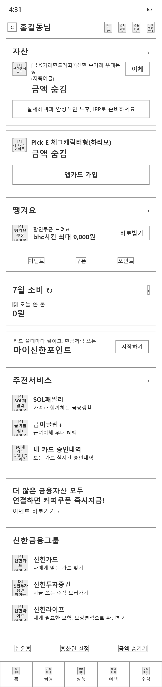
↓ 길이 1648px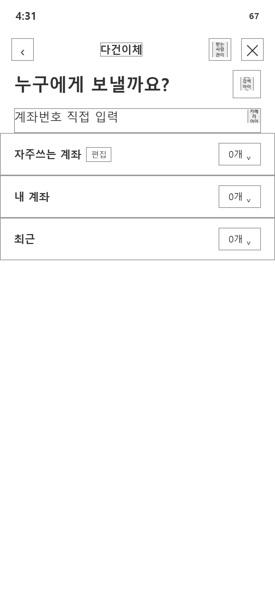
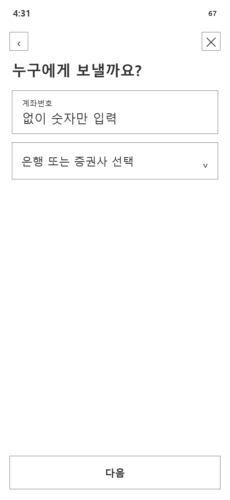
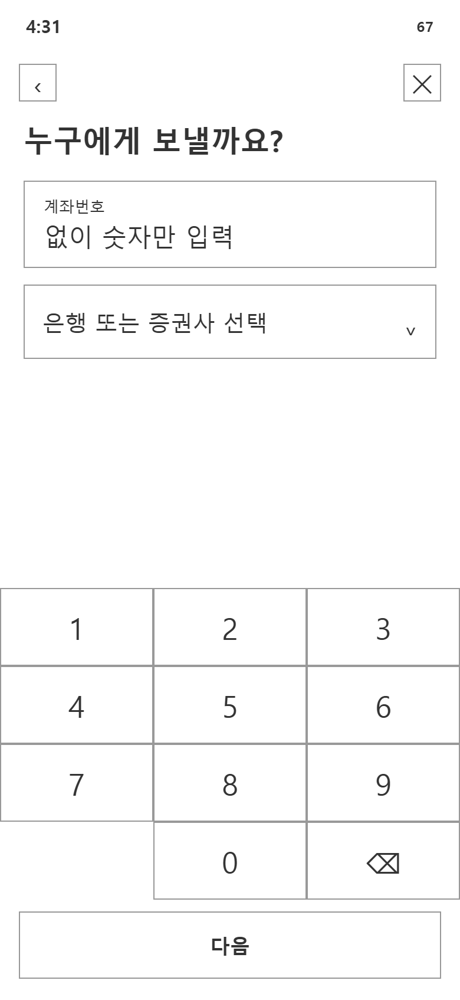
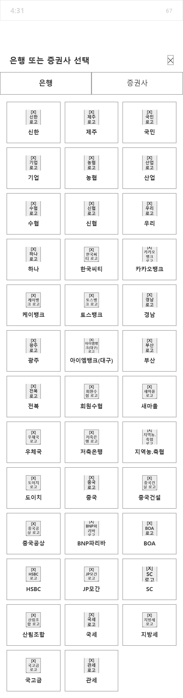
↓ 길이 1482px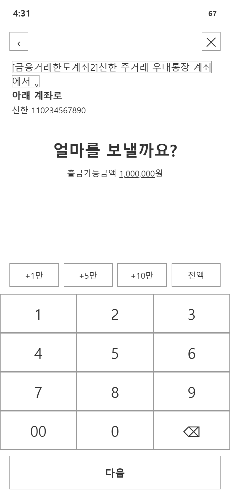
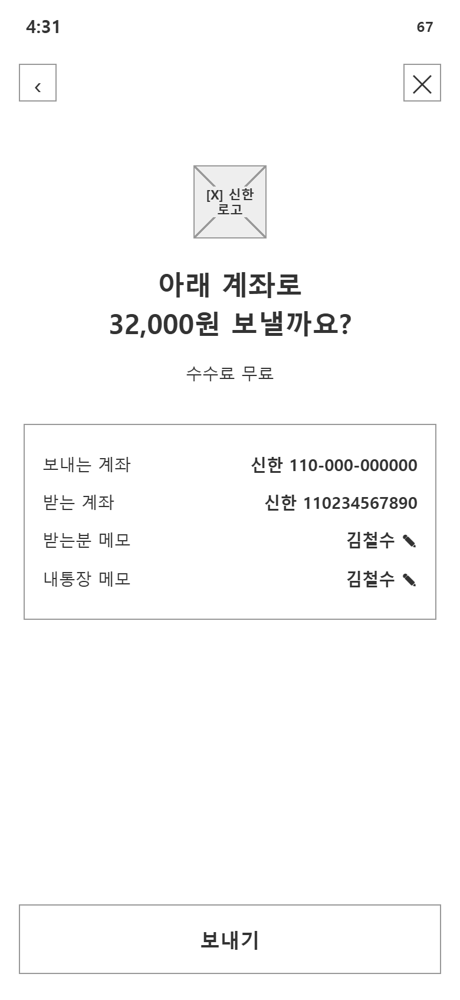
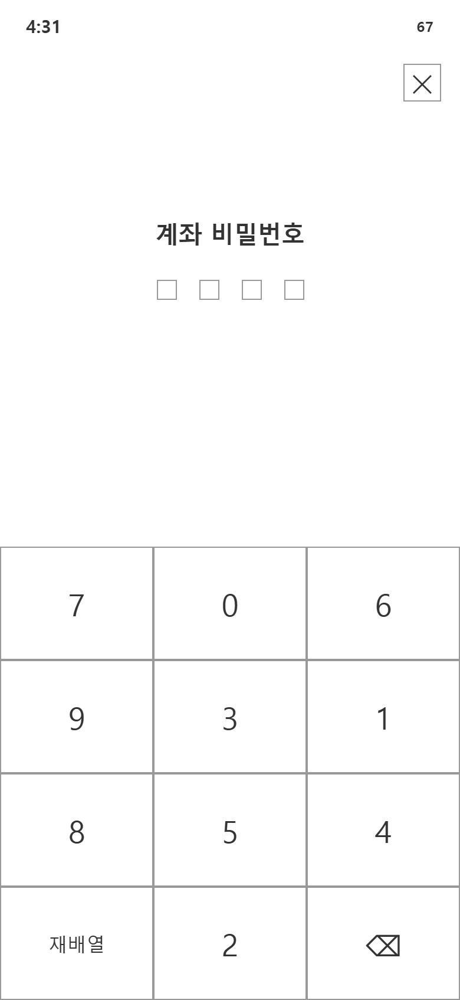
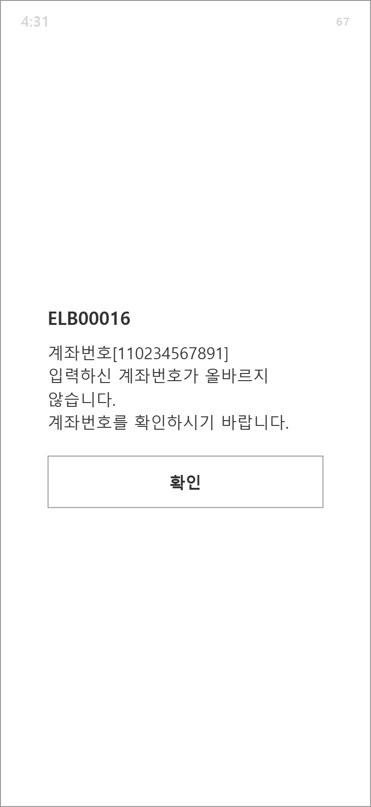
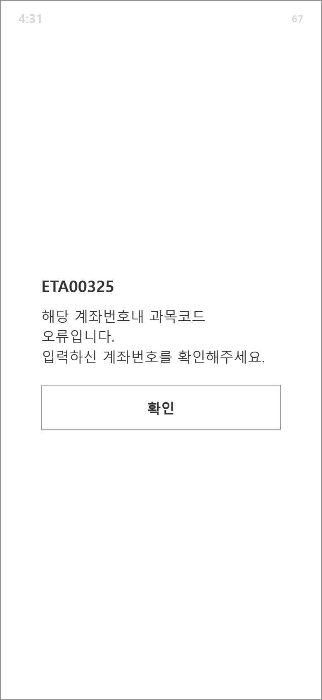
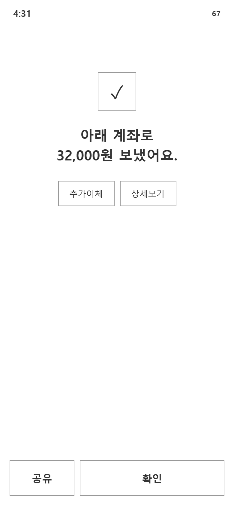
이 표는 "기능은 줄이지 않는다" 의 확인표다 — 줄마다 그 기능이 어느 화면에 있는지 표시하고, 표시가 하나도 없는 줄은 설계서의 어느 장에서도 보지 못한 기능이다.
| 기능 | 원본 화면 | ||||||||||
|---|---|---|---|---|---|---|---|---|---|---|---|
| 과제 단계 9 — 원본 화면: 계획 | |||||||||||
| 1. home | - | ● | |||||||||
| 2. recipient ← e5 '이체' | - | ● | |||||||||
| 3. account ← e6 '계좌번호 직접 입력' | - | ● | |||||||||
| 4. account ← e3 '계좌번호' | - | ● | |||||||||
| 5. bank ← e4 '은행 또는 증권사 선… | - | ● | |||||||||
| 6. amount ← e4 '신한' → … → #acc-next 누름 | - | ● | |||||||||
| 7. confirm ← {AMOUNT} 입력 → e6 '다음' | - | ● | |||||||||
| 8. password ← e3 '보내기' | - | ● | |||||||||
| 9. done ← e2 '7' ×4 | - | ● | |||||||||
| 선택지 무리 2 — 원본 화면: 도구 확인 (원본을 걸어 봄) | |||||||||||
| pick-bank · 원본 67개 — 값 38/67 찾음 (빌드: pick-bank) | bank | ●38/67 | |||||||||
| quick · 원본 4개 — 값 4/4 찾음 (빌드: quick) | amount | ●4/4 | |||||||||
| 입력 수단 3 — 원본 화면: 도구 확인 (원본을 걸어 봄) | |||||||||||
| 숫자판 acc-num · 원본 10개 — 값 10/10 찾음 (빌드: acc-num) · 값이 같은 무리: acc-num, num, pw | account | 같은 값 | ●10/10 | ||||||||
| 숫자판 num · 원본 11개 — 값 11/11 찾음 (빌드: num) · 값이 같은 무리: acc-num, num, pw | amount | 같은 값 | ●11/11 | ||||||||
| 숫자판 pw · 원본 10개 — 값 10/10 찾음 (빌드: pw) · 값이 같은 무리: acc-num, num, pw | password | 같은 값 | ●10/10 | ||||||||
| 오류 회복 2 — 원본 화면: 과제의 원본 흐름 | |||||||||||
| wrong-account 계좌번호가 틀렸다 (원본 오류 코드 ELB00016) — 회복 e1 '확인' → [scr-account] | err-account → account | ● | |||||||||
| wrong-bank 계좌번호는 맞는데 은행이 틀렸다 (원본 오류 코드 E… — 회복 e1 '확인' → [scr-confirm] | err-bank → confirm | ● | |||||||||
| 과제 밖 입구 31 — 원본 화면: 과제 파일 | |||||||||||
| 메시지 oos-message | home | ● | |||||||||
| 지갑 oos-wallet | home | ● | |||||||||
| 알림 oos-alarm | home | ● | |||||||||
| IRP 안내 oos-irp | home | ● | |||||||||
| 앱카드 가입 oos-appcard | home | ● | |||||||||
| 바로받기 oos-get-coupon | home | ● | |||||||||
| 이벤트 oos-event | home | ● | |||||||||
| 쿠폰 oos-coupon | home | ● | |||||||||
| 포인트 oos-point | home | ● | |||||||||
| 소비 상세 oos-spend-detail | home | ● | |||||||||
| 마이신한포인트 oos-my-point | home | ● | |||||||||
| 자산 연결 이벤트 oos-connect-event | home | ● | |||||||||
| 홈화면 설정 oos-home-setting | home | ● | |||||||||
| 금액 숨기기 oos-hide-amount | home | ● | |||||||||
| 금융 oos-tab-finance | home | ● | |||||||||
| 상품 oos-tab-goods | home | ● | |||||||||
| 혜택 oos-tab-benefit | home | ● | |||||||||
| 주식 oos-tab-stock | home | ● | |||||||||
| 다건이체 oos-multi-transfer | recipient | ● | |||||||||
| 받는 사람 관리 oos-payee-manage | recipient | ● | |||||||||
| 검색 oos-search | recipient | ● | |||||||||
| 자주쓰는 계좌 oos-frequent | recipient | ● | |||||||||
| 내 계좌 oos-my-accounts | recipient | ● | |||||||||
| 최근 oos-recent | recipient | ● | |||||||||
| 출금계좌 변경 oos-from-account · 장에서 보지 못함 | amount | ||||||||||
| 추가이체 oos-more-transfer | done | ● | |||||||||
| 상세보기 oos-detail | done | ● | |||||||||
| 공유 oos-share | done | ● | |||||||||
| 전체메뉴 oos-menu | home | ● | |||||||||
| 쉬운홈 oos-easy-home | home | ● | |||||||||
| 홈 oos-tab-home | home | ● | |||||||||
| 화면 ID | 화면 이름 | 경로 (흐름 명세) | 바탕이 된 원본 화면 |
|---|---|---|---|
| scr-home | home 화면 이름 | home | - |
| 영역 | 이름 · 설명 | 요소와 동작 |
|---|---|---|
| 1 | 영역 1(mock) 요소 e1, e2, e3, e4 mock | 도구 확인
|
| 2 | 영역 2(mock) 요소 e5 mock | 도구 확인
|
| 3 | 영역 3(mock) 요소 e6 mock | 도구 확인
|
| 4 | 영역 4(mock) 요소 e7 mock | 도구 확인
|
| 5 | 영역 5(mock) 요소 e8 mock | 도구 확인
|
| 6 | 영역 6(mock) 요소 e9, e10, e11 mock | 도구 확인
|
| 7 | 영역 7(mock) 요소 e12 mock | 도구 확인
|
| 8 | 영역 8(mock) 요소 e13 mock | 도구 확인
|
| 9 | 영역 9(mock) 요소 e14 mock | 도구 확인
|
| 10 | 영역 10(mock) 요소 e15, e16, e17, e18, e19, e20, e21, e22 mock | 도구 확인
|
| 화면 ID | 화면 이름 | 경로 (흐름 명세) | 바탕이 된 원본 화면 |
|---|---|---|---|
| scr-recipient | recipient 화면 이름 | home > recipient | - |
| 영역 | 이름 · 설명 | 요소와 동작 |
|---|---|---|
| 1 | 영역 1(mock) 요소 e1, e3, e4, e2, e5, e6, e7, e8, e9 mock | 도구 확인
|
| 화면 ID | 화면 이름 | 경로 (흐름 명세) | 바탕이 된 원본 화면 |
|---|---|---|---|
| scr-account | account 화면 이름 | home > recipient > account | - |
| 영역 | 이름 · 설명 | 요소와 동작 |
|---|---|---|
| 1 | 영역 1(mock) 요소 e1, e2 mock | 도구 확인
|
| 2 | 영역 2(mock) 요소 e3, e4 mock | 도구 확인
|
| 3 | 영역 3(mock) 요소 e5 mock | 도구 확인
|
| 화면 ID | 화면 이름 | 경로 (흐름 명세) | 바탕이 된 원본 화면 | 조건 |
|---|---|---|---|---|
| scr-account--visit-2[다시 지남] | account 화면 이름 | home > recipient > account > account[다시 지남] | - | 정답 경로에서 이 화면을 2번째로 지날 때 (흐름 명세 steps 의 'account#2') |
| 영역 | 이름 · 설명 | 요소와 동작 |
|---|---|---|
| 1 | 영역 1(mock) 요소 e1, e2 mock | 도구 확인
|
| 2 | 영역 2(mock) 요소 e3, e4 mock | 도구 확인
|
| 3 | 영역 3(mock) 요소 e5, e6, e7 mock | 도구 확인
|
| 화면 ID | 화면 이름 | 경로 (흐름 명세) | 바탕이 된 원본 화면 |
|---|---|---|---|
| scr-bank | bank 화면 이름 | home > recipient > account > account > bank | - |
| 영역 | 이름 · 설명 | 요소와 동작 |
|---|---|---|
| 1 | 영역 1(mock) 요소 e1, e2, e3, e4 mock | 도구 확인
|
| 화면 ID | 화면 이름 | 경로 (흐름 명세) | 바탕이 된 원본 화면 |
|---|---|---|---|
| scr-amount | amount 화면 이름 | home > recipient > account > account > bank > amount | - |
| 영역 | 이름 · 설명 | 요소와 동작 |
|---|---|---|
| 1 | 영역 1(mock) 요소 e1, e2 mock | 도구 확인
|
| 2 | 영역 2(mock) 요소 e3, e4, e5, e6 mock | 도구 확인
|
| 화면 ID | 화면 이름 | 경로 (흐름 명세) | 바탕이 된 원본 화면 |
|---|---|---|---|
| scr-confirm | confirm 화면 이름 | home > recipient > account > account > bank > amount > confirm | - |
| 영역 | 이름 · 설명 | 요소와 동작 |
|---|---|---|
| 1 | 영역 1(mock) 요소 e1, e2 mock | 도구 확인
|
| 2 | 영역 2(mock) 요소 e3 mock | 도구 확인
|
| 화면 ID | 화면 이름 | 경로 (흐름 명세) | 바탕이 된 원본 화면 |
|---|---|---|---|
| scr-password | password 화면 이름 | home > recipient > account > account > bank > amount > confirm > password | - |
| 영역 | 이름 · 설명 | 요소와 동작 |
|---|---|---|
| 1 | 영역 1(mock) 요소 e1 mock | 도구 확인
|
| 2 | 영역 2(mock) 요소 e2, e3, e4 mock | 도구 확인
|
| 화면 ID | 화면 이름 | 경로 (흐름 명세) | 바탕이 된 원본 화면 |
|---|---|---|---|
| scr-done | done 화면 이름 | home > recipient > account > account > bank > amount > confirm > password > done | - |
| 영역 | 이름 · 설명 | 요소와 동작 |
|---|---|---|
| 1 | 영역 1(mock) 요소 e1, e2 mock | 도구 확인
|
| 2 | 영역 2(mock) 요소 e3, e4 mock | 도구 확인
|
| 화면 ID | 화면 이름 | 경로 (흐름 명세) | 바탕이 된 원본 화면 | 조건 |
|---|---|---|---|---|
| scr-err-account[오류] | err-account 화면 이름 | home > recipient > account > account > bank > err-account[오류] | - | 오류 경로 'wrong-account' (계좌번호가 틀렸다 (원본 오류 코드 ELB00016)) — scr-bank 에서 잘못된 값(ACCOUNT_WRONG)을 넣은 뒤 (흐름 명세 error_paths) |
| 영역 | 이름 · 설명 | 요소와 동작 |
|---|---|---|
| 1 | 영역 1(mock) 요소 e1 mock | 도구 확인
|
| 화면 ID | 화면 이름 | 경로 (흐름 명세) | 바탕이 된 원본 화면 | 조건 |
|---|---|---|---|---|
| scr-err-bank[오류] | err-bank 화면 이름 | home > recipient > account > account > bank > err-bank[오류] | - | 오류 경로 'wrong-bank' (계좌번호는 맞는데 은행이 틀렸다 (원본 오류 코드 ETA00325)) — scr-bank 에서 잘못된 값(BANK_WRONG)을 넣은 뒤 (흐름 명세 error_paths) |
| 영역 | 이름 · 설명 | 요소와 동작 |
|---|---|---|
| 1 | 영역 1(mock) 요소 e1 mock | 도구 확인
|